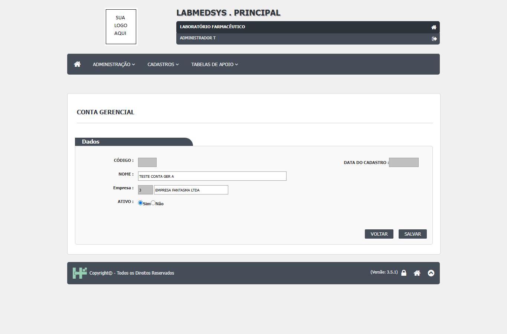
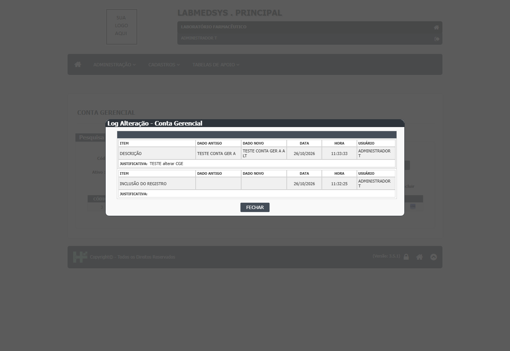
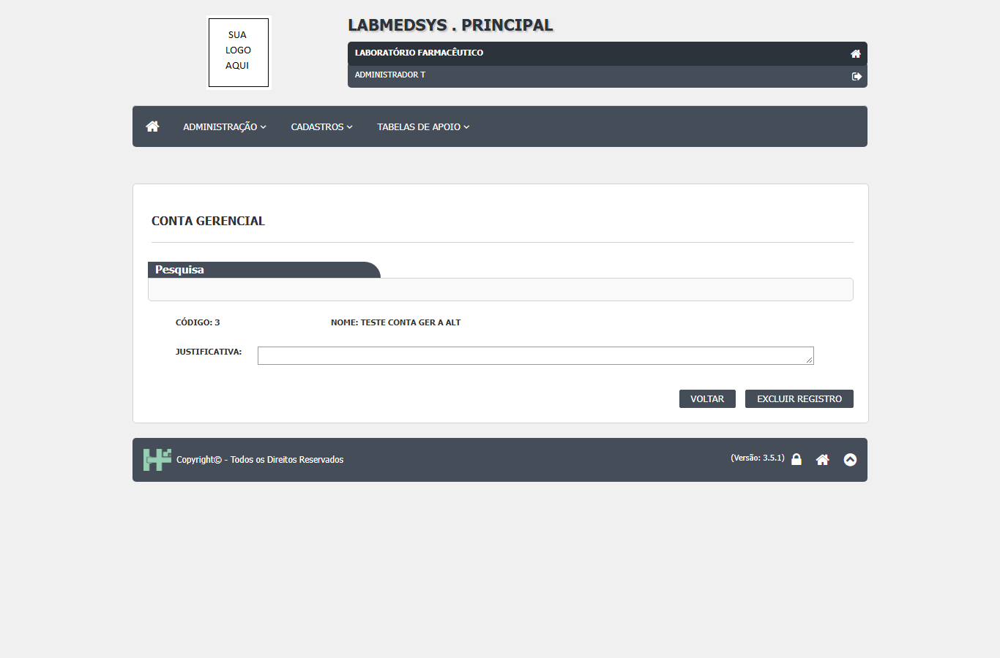
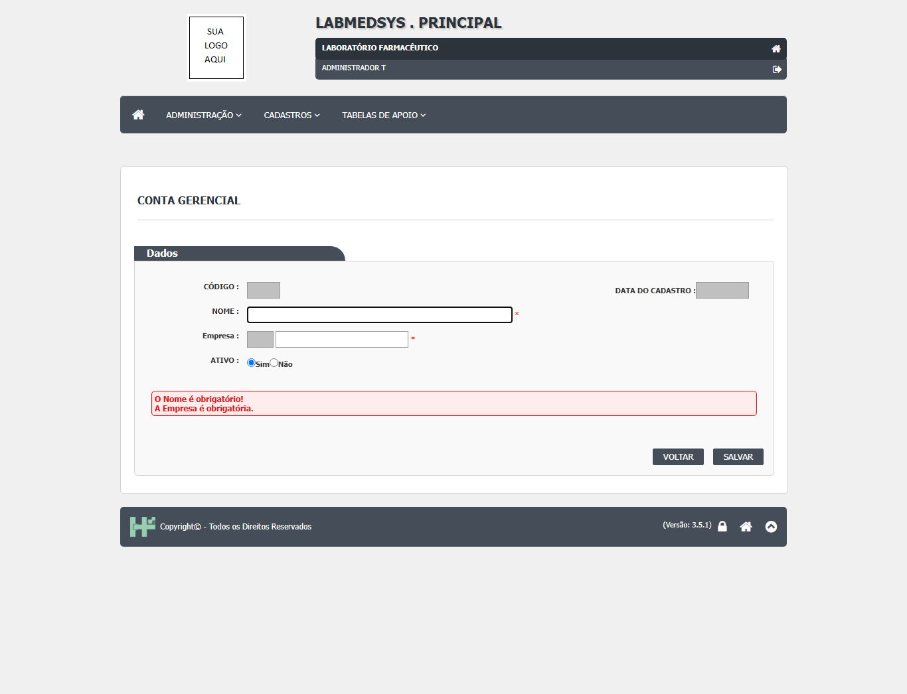
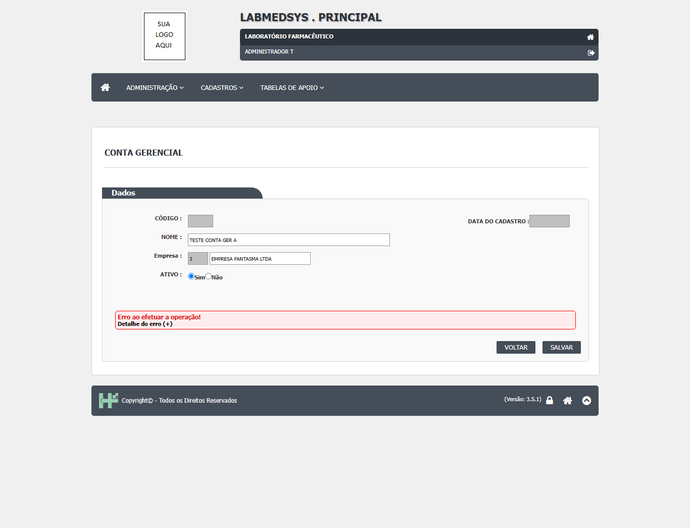
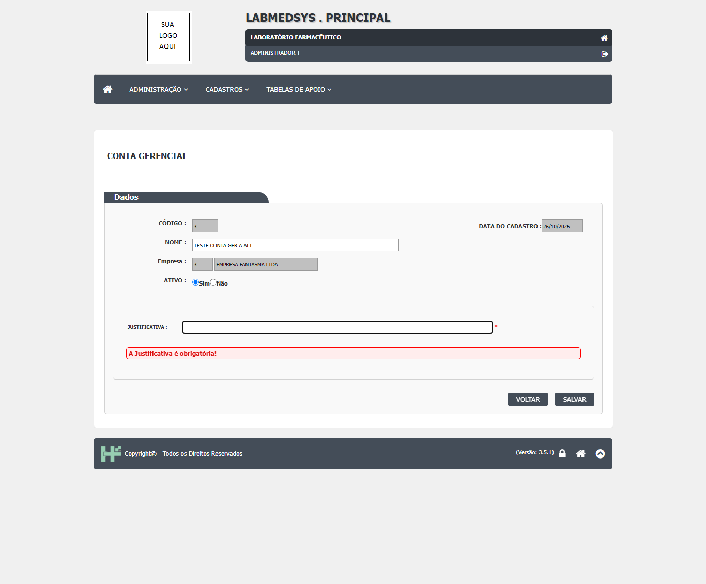
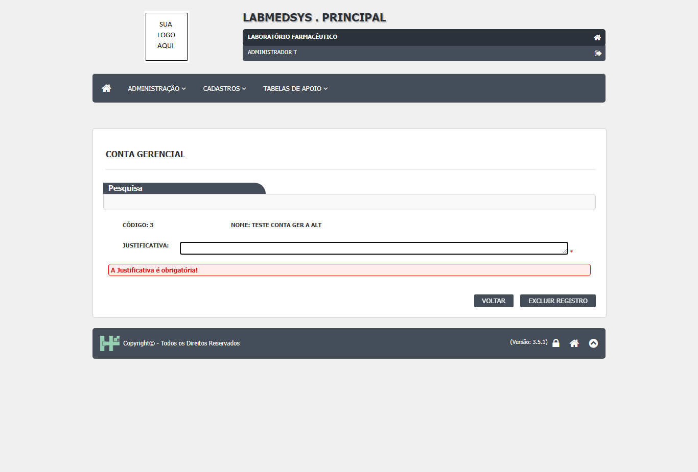

Para que serve
Cadastra as contas gerenciais de cada empresa: um nome (por exemplo, um grupo de custos ou de bens) ligado a uma empresa do cadastro de Pessoa jurídica. É o nível acima do cadastro de Local físico (tela 10): cada local físico pertence a uma conta gerencial. O código mostra duas telas no mesmo cadastro:
- Lista com pesquisa por código, nome, situação e empresa e ordenação (conta_gerencial_lst.aspx:45-78 e 106-148; conta_gerencial_lst.aspx.cs:54-100).
- Formulário para incluir, alterar e consultar: o nome, a empresa, se está ativo e, na alteração, a justificativa (conta_gerencial_ed.aspx:58-112).
Fora do foco de Boas Práticas. As contas gerenciais e os locais físicos são lidos pelo módulo Patrimônio (bens, transferências, baixas, reavaliações, depreciação, inventário), que não faz parte dos sete módulos desta análise (HSolutions.Patrimonio.Domain: Transferencia.cs, Depreciacao.cs, Reavaliacao.cs; HSolutions.Patrimonio.Context: BemConfiguration.cs). Nenhum dos módulos fabris (Produção, Estoque, Controle da Qualidade, Garantia da Qualidade, Comercial, Rastreabilidade) lê estas tabelas (busca por nome no repositório). O valor para a ANVISA é só o de qualquer cadastro mestre: identificação única e rastro de alteração.
Esta tela não tem relatório: os botões Imprimir e Excel existem na página, mas ficam sempre escondidos e a página de relatório não existe no código (ver falhas).
Quem usa e em que etapa do processo
Quem usa
- Quem mantém o cadastro de bens e de custos da empresa: contabilidade, controladoria ou patrimônio (leitura da área, a validar).
- Quem consulta a lista e o histórico.
- Quem pode abrir, incluir, alterar, excluir, imprimir e ver o histórico está em "Quem pode usar (permissões)", mais abaixo.
Em que etapa do processo entra (tela 7 do menu Cadastros, módulo Principal)
- Pelo menu superior Cadastros › Conta Gerencial, que abre a lista.
- Na lista, Pesquisar traz as contas (a lista não carrega sozinha); Incluir abre o formulário vazio e o lápis abre uma conta pelo endereço
conta_gerencial_ed.aspx?cod=.
O que acontece depois (para onde o trabalho segue)
- SALVAR pergunta "Confirma a inclusão do item?" ou "Confirma a alteração do item?". Com SIM, o sistema grava e mostra "Conta Gerencial cadastrada com sucesso!" ou "Conta Gerencial atualizada com sucesso!"; o OK volta à lista.
- A conta gravada passa a ser oferecida no cadastro de Local físico (conta_gerencial pelo texto digitado, com a empresa escolhida) e no módulo Patrimônio.
Fonte: Resumo da tela e fluxo da tela (leitura do código e dos testes). O que for leitura da área precisa ser validado com a área.
Antes de começar (o que precisa existir)
- Entre no módulo Principal e abra Cadastros › Conta Gerencial.
- A empresa precisa existir em Cadastros › Pessoa jurídica, com o tipo Empresa (wsAutoComplete.asmx.cs:93-104).
- Quem não tem a função desta tela ("CONTA GERENCIAL") é levado à página de acesso negado ao abrir a lista (conta_gerencial_lst.aspx.cs:38; ClassePaiLst.cs:65). Incluir, Editar, Excluir e Ver Log só aparecem para quem tem a ação correspondente (ClassePaiLst.cs:111-255).
Passo a passo
Situação das imagens (14/11/2026): imagens reaproveitadas dos testes de 26/10/2026 (rodada 3), cada uma conferida contra o texto. Sem imagem: a lista com a grade, o aviso de sucesso, a inativação, a exclusão recusada por uso no Local físico, a busca da empresa por sugestão.
Pesquisar
- Abra a lista (vem vazia). Preencha, se quiser, Código (só números), Nome, Ativo e Empresa (digite pelo menos duas letras e escolha na sugestão) e clique em Pesquisar (conta_gerencial_lst.aspx:45-78).
- A grade mostra Código, Nome, Empresa e Ativo, com paginação e ordenação (conta_gerencial_lst.aspx:106-122; conta_gerencial_lst.aspx.cs:54-100).
- Limpar esvazia filtros e grade (conta_gerencial_lst.aspx.cs:216-240).
Incluir
- Clique em Incluir.
- Preencha Nome (obrigatório; só letras, números e espaço) e Empresa (obrigatória: digite e escolha na sugestão). Ativo vem como Sim (conta_gerencial_ed.aspx:58-87).

Figura 1: O formulário de inclusão da Conta Gerencial preenchido: Nome, Empresa e Ativo = Sim, antes de salvar.
- Clique em SALVAR e responda SIM a "Confirma a inclusão do item?" (conta_gerencial_ed.aspx.cs:104-128).
- Se já existir outra conta com o mesmo nome na mesma empresa, aparece "Esse Nome de Conta Gerencial já existe." (PessoaJuridica.cs:340-344 da biblioteca).
Alterar ou inativar
- Clique no lápis. A empresa fica travada. Mude o Nome ou o Ativo e escreva a Justificativa (obrigatória na alteração) (conta_gerencial_ed.aspx.cs:73-100).
- Clique em SALVAR e confirme. O histórico guarda o valor antigo e o novo de Ativo e Nome, com usuário e justificativa (conta_gerencial_ed.aspx.cs:273-326).

Figura 2: A janela "Log Alteração - Conta Gerencial": a mudança de DESCRIÇÃO (dado antigo e novo) com a justificativa e a linha "INCLUSÃO DO REGISTRO".
- Um registro inativo abre travado, com só Ativo e Justificativa liberados (conta_gerencial_ed.aspx.cs:57-71).
Excluir
- Na lista, clique no ícone de exclusão. A tela troca para o painel de exclusão, com o código, o nome e a Justificativa (conta_gerencial_lst.aspx.cs:117-125; conta_gerencial_lst.aspx:177-208).

Figura 3: O painel de exclusão: código, nome, campo Justificativa e os botões VOLTAR e EXCLUIR REGISTRO.
- Escreva a justificativa, clique em EXCLUIR REGISTRO e responda SIM a "Confirma a exclusão do item?" (conta_gerencial_lst.aspx.cs:304-346 e 448-456).
- Atenção: o código não confere se a conta tem locais físicos ligados; ele só a manda para a lixeira (ver falhas).
Ver o histórico
- O ícone LOG abre o histórico da conta (conta_gerencial_lst.aspx.cs:132-145).
- Imprimir e Excel não aparecem nesta tela (conta_gerencial_lst.aspx.cs:48-49 e 225-226).
O que acontece ao confirmar ou salvar
- SALVAR pergunta "Confirma a inclusão do item?" ou "Confirma a alteração do item?". Com SIM, o sistema grava e mostra "Conta Gerencial cadastrada com sucesso!" ou "Conta Gerencial atualizada com sucesso!"; o OK volta à lista (conta_gerencial_ed.aspx.cs:104-128, 173-207 e 151-155).
- A conta gravada passa a ser oferecida no cadastro de Local físico (conta_gerencial pelo texto digitado, com a empresa escolhida) e no módulo Patrimônio (wsAutoComplete.asmx.cs:106-120).
O que o sistema recusa
- "O Nome é obrigatório!" / "A Empresa é obrigatória." / "A Situação é obrigatório!": Campo em branco (conta_gerencial_ed.aspx:61, 75 e 85)
- "A Justificativa é obrigatória!": Alteração ou exclusão sem justificativa (conta_gerencial_ed.aspx:102; conta_gerencial_lst.aspx:192)
- "Esse Nome de Conta Gerencial já existe.": Outro nome igual na mesma empresa (PessoaJuridica.cs:344 e 378 (biblioteca))
- "Não é possível inserir espaços em branco repetidos no Nome!": Nome com dois espaços seguidos (ContaGerencial.cs:136 (biblioteca))
- "Erro ao efetuar a operação!" com o texto do erro entre colchetes: Qualquer falha ao gravar, inclusive nome acima de 50 caracteres (conta_gerencial_ed.aspx.cs:162-164 e 209-218)
- "A pesquisa não retornou nenhum resultado.": Pesquisa sem linhas (conta_gerencial_lst.aspx.cs:95)
- "Não há Conta Gerencial cadastrado com este código.": Código de conta que não existe ou foi excluído (PessoaJuridicaRepository.cs:242 (biblioteca))

Figura 4: Salvar com tudo em branco: mensagens vermelhas "O Nome é obrigatório!" e "A Empresa é obrigatória.".

Figura 5: Salvar com nome já existente na mesma empresa: a tela mostra só "Erro ao efetuar a operação!" com o link "Detalhe do erro (+)", sem dizer que o nome já existe.

Figura 6: Alterar sem Justificativa: mensagem vermelha "A Justificativa é obrigatória!" sobre o campo Justificativa.

Figura 7: Excluir sem Justificativa: o painel de exclusão mostra "A Justificativa é obrigatória!".
Quem pode usar (permissões)
- A lista usa a função de tela "CONTA GERENCIAL" (conta_gerencial_lst.aspx.cs:38). A base das listas confere a função logo no início e leva quem não a tem à página de acesso negado (ClassePaiLst.cs:65; BaseController.cs:26-31). Incluir, Editar, Consultar, Excluir e Ver Log dependem de cada ação (ClassePaiLst.cs:111-255).
- O formulário usa a mesma função (conta_gerencial_ed.aspx.cs:23). A base do formulário só calcula as ações e não bloqueia a entrada (ClassePaiEd.cs:71-156). Esta tela trava o formulário e esconde o SALVAR para quem não tem Alterar, inclusive na conta nova (conta_gerencial_ed.aspx.cs:57-61): quem só tem Incluir veria o formulário novo sem SALVAR (inferência a confirmar). O formulário só confere se há sessão aberta (conta_gerencial_ed.aspx.cs:27-30).
- Não há página de relatório, portanto não há relatório sem conferência.
- O detalhe da conferência de acesso está na seção "Segurança e acesso" desta tela.
Cuidados e falhas conhecidas
- Nenhum. A tela não foi testada. Nenhum DV-PRI registrado tem esta tela como alvo (
defeitos/defeitos-completo.json, campotela). - DV-PRI-009 (Alta), visto em outro cadastro (Excluir Ambiente e Equipamento sem justificativa). Nesta tela: Esta tela pede justificativa na exclusão (conta_gerencial_lst.aspx:189-192). Situação aqui: Não se aplica pelo código.
- DV-PRI-011 (Média), visto em outro cadastro (Recusa de exclusão com mensagem genérica). Nesta tela: Esta tela nem recusa: não confere dependentes (conta_gerencial_lst.aspx.cs:304-346). Situação aqui: A confirmar no teste.
- DV-PRI-014 (Alta), visto em outro cadastro (Histórico de excluído não pode ser consultado). Nesta tela: Lista só com registros fora da lixeira (PessoaJuridicaRepository.cs:175). Situação aqui: A confirmar no teste.
- DV-PRI-008 (Baixa), visto em outro cadastro (Pesquisa não ignora acentos). Nesta tela: Pesquisa com Contains no banco (PessoaJuridicaRepository.cs:187-191). Situação aqui: A confirmar no teste.
- DV-PRI-025 (Alta), visto em outro cadastro (Telas de edição abrem pelo endereço sem permissão). Nesta tela: O formulário não bloqueia a entrada (ver segurança). Situação aqui: A confirmar no teste.
- (a confirmar no teste) A exclusão não confere locais físicos ligados. A conta vai para a lixeira mesmo com locais físicos dependendo dela.
- (a confirmar no teste) Nome com mais de 50 caracteres dá erro genérico: a tela aceita 255 e o banco guarda 50. O erro aparece como "Erro ao efetuar a operação!" com o texto técnico.
- (a confirmar no teste) Imprimir e Excel não existem de fato: os botões estão na página, mas ficam escondidos em todo carregamento e a página de relatório não existe. O inventário já anotava "Sem relatório".
- (a confirmar no teste) Código de pesquisa que não é número derruba a página: o texto é convertido sem tratamento. A tela filtra o digitado no navegador, mas não o envio direto.
- (a confirmar no teste) Código maior que 32767 não abre: o formulário converte o código para número de 16 bits. Com muitas contas, as últimas não abririam.
- (a confirmar no teste) Nome só com letras, números e espaço: não dá para escrever códigos contábeis com ponto ou hífen no nome. Pode obrigar a abreviar.
- (a confirmar no teste) Conta inativa continua escolhível no Local físico: a busca não filtra por situação, embora exista uma versão que filtra só as ativas.
- (a confirmar no teste) O histórico pode registrar alteração de caixa sem mudança real (ver "Situações e histórico").
- (a confirmar no teste) A alteração não registra a empresa porque ela é travada, mas o código do histórico prevê essa mudança: código sem uso.
- (a confirmar no teste) Mensagem com concordância errada: "A Situação é obrigatório!".
- As imagens deste manual vêm do teste de 26/10/2026 (rodada 3). Os resultados desse teste ainda precisam ser conferidos com a seção "Casos de teste" desta tela, que pode ter sido escrita antes dele.
Ícones e botões da lista
Inclui também os botões do formulário.
| Ícone ou botão | O que faz | Quando aparece |
|---|---|---|
| Pesquisar | Procura com os filtros, ordenando pelo nome | Na lista |
| Limpar | Esvazia filtros e grade | Na lista |
| Incluir | Abre o formulário vazio | Para quem tem a ação Incluir |
| Imprimir e Excel | A lista esconde os dois botões em todo carregamento; o código leva a uma página de relatório que não existe | Nunca aparecem |
| Lápis (Editar) e lupa (Consultar) | Abrem o formulário pelo endereço com cod |
Conforme as ações do perfil |
| Excluir | Abre o painel de exclusão com justificativa | Para quem tem Excluir |
| EXCLUIR REGISTRO e VOLTAR (painel) | EXCLUIR REGISTRO pede confirmação e exclui; VOLTAR sai | No painel de exclusão |
| LOG | Abre o histórico | Para quem tem Consultar log |
| SALVAR | Pede confirmação e grava | No formulário |
| VOLTAR | Volta à lista sem gravar | No formulário |
Campos da tela
Caminhos das fontes na seção Resumo da tela. "Sim (servidor)" quando o servidor também confere; "Só na tela" quando só o navegador confere.
Lista
| Campo na tela | Tipo | Obrigatório | Regra, limite ou valores possíveis | Fonte |
|---|---|---|---|---|
| Código | Texto | Não | Só dígitos; procura o código exato; um valor que não seja número derruba a pesquisa (ver falhas) | conta_gerencial_lst.aspx:45-47; PessoaJuridicaRepository.cs:182-186 |
| Nome | Texto | Não | Até 100 caracteres; procura o texto dentro do nome; maiúsculas | conta_gerencial_lst.aspx:50-52; conta_gerencial_lst.aspx.cs:203; PessoaJuridicaRepository.cs:187-191 |
| Ativo | Lista | Não | TODAS (padrão), SIM, NÃO | conta_gerencial_lst.aspx:63-67 |
| Empresa | Texto com sugestão | Não | Pessoas jurídicas do tipo Empresa; mínimo de 2 letras | conta_gerencial_lst.aspx:71-80; wsAutoComplete.asmx.cs:93-104 |
| Grade | Tabela | Não | Código, Nome, Empresa, Ativo; colunas Editar, Consultar, Excluir e VerLog conforme as permissões; 10 linhas por página | conta_gerencial_lst.aspx:106-148; PessoaJuridicaRepository.cs:171 |
Formulário
| Campo na tela | Tipo | Obrigatório | Regra, limite ou valores possíveis | Fonte |
|---|---|---|---|---|
| Código | Texto travado | Não se aplica | Gerado pelo banco | conta_gerencial_ed.aspx:44-46 |
| Data do Cadastro | Texto travado | Não se aplica | Data de criação (sem hora) | conta_gerencial_ed.aspx:48; ContaGerencial.cs:17 (biblioteca) |
| Nome | Texto | Sim | Tela aceita 255 caracteres; o banco guarda 50; só letras, números e espaço (filtro do navegador); "O Nome é obrigatório!"; gravado em maiúsculas | conta_gerencial_ed.aspx:58-63; TBL_CONTA_GERENCIAL.sql:3; ContaGerencialConfiguration.cs:20-23 (biblioteca) |
| Empresa | Texto com sugestão | Sim | Pessoa jurídica do tipo Empresa; "A Empresa é obrigatória."; travada na alteração | conta_gerencial_ed.aspx:66-77; conta_gerencial_ed.aspx.cs:79-96 |
| Ativo | Sim / Não | Sim | Padrão Sim; "A Situação é obrigatório!" | conta_gerencial_ed.aspx:79-87 |
| Justificativa | Texto | Sim, só ao alterar | Até 255; o painel só aparece quando a página abre com cod |
conta_gerencial_ed.aspx:94-112; conta_gerencial_ed.aspx.cs:35-42 e 97-99 |
Botões e ações
| Botão ou ação | Quando aparece | O que faz | Fonte |
|---|---|---|---|
| Pesquisar | Na lista | Procura com os filtros, ordenando pelo nome | conta_gerencial_lst.aspx.cs:197-214 |
| Limpar | Na lista | Esvazia filtros e grade | conta_gerencial_lst.aspx.cs:216-240 |
| Incluir | Para quem tem a ação Incluir | Abre o formulário vazio | conta_gerencial_lst.aspx.cs:192-195 |
| Imprimir e Excel | Nunca aparecem | A lista esconde os dois botões em todo carregamento; o código leva a uma página de relatório que não existe | conta_gerencial_lst.aspx.cs:48-49, 97-98, 225-226, 242-286 |
| Lápis (Editar) e lupa (Consultar) | Conforme as ações do perfil | Abrem o formulário pelo endereço com cod |
conta_gerencial_lst.aspx.cs:126-131 |
| Excluir | Para quem tem Excluir | Abre o painel de exclusão com justificativa | conta_gerencial_lst.aspx.cs:117-125 |
| EXCLUIR REGISTRO e VOLTAR (painel) | No painel de exclusão | EXCLUIR REGISTRO pede confirmação e exclui; VOLTAR sai | conta_gerencial_lst.aspx.cs:435-446 |
| LOG | Para quem tem Consultar log | Abre o histórico | conta_gerencial_lst.aspx.cs:132-145 |
| SALVAR | No formulário | Pede confirmação e grava | conta_gerencial_ed.aspx.cs:104-107 |
| VOLTAR | No formulário | Volta à lista sem gravar | conta_gerencial_ed.aspx.cs:130-133 |
Mensagens do sistema
Nenhuma mensagem desta tela apareceu em teste. Todas vêm do texto do código.
| Mensagem (texto exato do código) | Quando aparece | Fonte |
|---|---|---|
| "Confirma a inclusão do item?" / "Confirma a alteração do item?" | Ao clicar em SALVAR | conta_gerencial_ed.aspx.cs:118 e 122 |
| "Conta Gerencial cadastrada com sucesso!" / "Conta Gerencial atualizada com sucesso!" | Depois de gravar | conta_gerencial_ed.aspx.cs:186 e 205 |
| "O Nome é obrigatório!" / "A Empresa é obrigatória." / "A Situação é obrigatório!" | Campo em branco | conta_gerencial_ed.aspx:61, 75 e 85 |
| "A Justificativa é obrigatória!" | Alteração ou exclusão sem justificativa | conta_gerencial_ed.aspx:102; conta_gerencial_lst.aspx:192 |
| "Esse Nome de Conta Gerencial já existe." | Outro nome igual na mesma empresa | PessoaJuridica.cs:344 e 378 (biblioteca) |
| "Não é possível inserir espaços em branco repetidos no Nome!" | Nome com dois espaços seguidos | ContaGerencial.cs:136 (biblioteca) |
| "Erro ao efetuar a operação!" com o texto do erro entre colchetes | Qualquer falha ao gravar, inclusive nome acima de 50 caracteres | conta_gerencial_ed.aspx.cs:162-164 e 209-218 |
| "A pesquisa não retornou nenhum resultado." | Pesquisa sem linhas | conta_gerencial_lst.aspx.cs:95 |
| "Confirma a exclusão do item?" | Ao clicar em EXCLUIR REGISTRO | conta_gerencial_lst.aspx.cs:455 |
| "Exclusão realizada com sucesso!" | Depois de excluir | conta_gerencial_lst.aspx.cs:326 |
| "Não há Conta Gerencial cadastrado com este código." | Código de conta que não existe ou foi excluído | PessoaJuridicaRepository.cs:242 (biblioteca) |
Quem pode fazer o quê
Ainda não levantado para esta tela
O quadro "Quem pode fazer o quê" é preenchido a partir de testes de tela por perfil (nível, área e etapa do registro), nunca por suposição. Esta tela ainda não passou por esse levantamento.